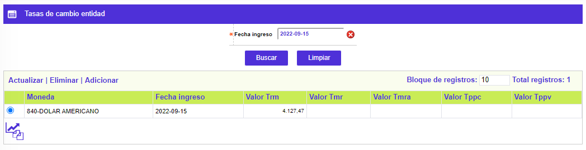
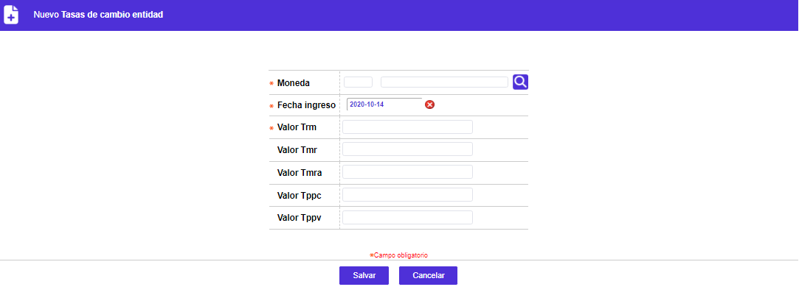
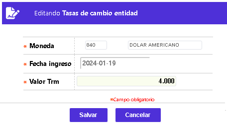

Tasas de cambio (entidad)
Mediante esta funcionalidad se habilita la consulta y mantenimiento de la data, del tipo de cambio (monto equivalente en moneda oficial respecto de otra moneda) vigente para la fecha a éste asociada, y si lo requiere puede también registrar otros valores relacionados con la tasa de cambio, algunos calculados por la propia entidad y otros determinados por las autoridades monetarias. Desde esta opción se define para la entidad y muestra consecuentemente el calendario, perteneciente a la corporación o entidad, sobre el que es posible navegar hacia atrás mostrando las monedas definidas hasta esa fecha. La forma sólo permite ingresar los valores de los tipos de cambio para la fecha actual (hoy), es decir, que impide ingresar valores para días anteriores o posteriores a la fecha del sistema. Esta opción dispone de un botón especial que permite copiar los valores de las tasas de cambio del día anterior, si existen, para modificar luego, únicamente aquellos que hayan variado, facilitando de ésta manera su actualización; debe tenerse en cuenta que para el correcto funcionamiento del sistema, es necesario realizar diariamente, a primera hora, la actualización de los indicadores básicos.

El formulario contiene los enlaces: Actualizar,Eliminar, Adicionar y Detalle. Adicionalmente, cuenta con un filtro de búsqueda y el botón Copiar indicadores del día anterior.
Filtro: Se pueden realizar consultas a través de las siguientes opciones:
|
Fecha ingreso |
Campo obligatorio que, mediante la funcionalidad de un calendario, permite definir la fecha a partir de la cual la entidad determinar el valor de asociado a dicha tasa. Por integridad de los cálculos solo permite definirle la misma fecha del día actual de proceso. |
Adicionar:Si el usuario invoca la opción Adicionar se despliega un formulario con los siguientes bloques:

|
Moneda |
Campo en el que se puede digitar el código de la moneda o seleccionar de la lista provista, aquella para la que se requiere realizar la consulta. |
|
Fecha ingreso |
Campo en el que mediante la funcionalidad de un calendario se selecciona la fecha para la que se requiere realizar la consulta. Por defecto muestra la fecha actual del sistema. |
|
Valor Trm |
Vr. Tasa representativa del mercado. Campo numérico obligatorio, que en un máximo de siete enteros y dos decimales permite registrar el monto o valor en moneda oficial equivalente a una unidad de la moneda con la que se está relacionando. |
|
Valor Tmr |
Vr. Tasa más representativa del mercado. Campo numérico no obligatorio, que en un máximo de siete enteros y dos decimales permite registrar el monto o valor en moneda oficial equivalente a una unidad de la moneda con la que se está relacionando, el cual es calculado por la entidad para uso específico. |
|
Valor Tmra |
Vr. Tasa más representativa del mercado mes anterior. Campo numérico no obligatorio, que en un máximo de siete enteros y dos decimales permite registrar el monto o valor en moneda oficial del mes anterior, equivalente a una unidad de la moneda con la que se está relacionando, el cual es calculado por la entidad para uso específico. |
|
Valor Tppc |
Vr. Tasa promedio ponderada compra. Campo numérico no obligatorio, que en un máximo de siete enteros y dos decimales permite registrar el monto o valor en moneda oficial equivalente a una unidad de la moneda con la que se está relacionando, el cual es calculado por la entidad para uso específico. |
|
Valor Tppv |
Vr. Tasa promedio ponderada venta. Campo numérico no obligatorio, que en un máximo de siete enteros y dos decimales permite registrar el monto o valor en moneda oficial equivalente a una unidad de la moneda con la que se está relacionando, el cual es calculado por la entidad para uso específico. |
Actualizar: Al activar ese enlace se despliega un nuevo formulario en el cual los únicos campos modificables son: Valor Trm, Valor Tmr, Valor Tmra, Valor Tppc, y Valor Tppv.

Copiar tasas día anterior: Botón que permite replicar los valores para las diferentes tasas de cambio definidos el día anterior, si existen, y solamente modificar aquellos cuyos valores hayan variado.